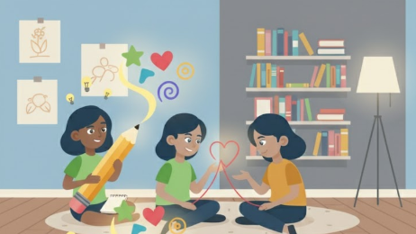
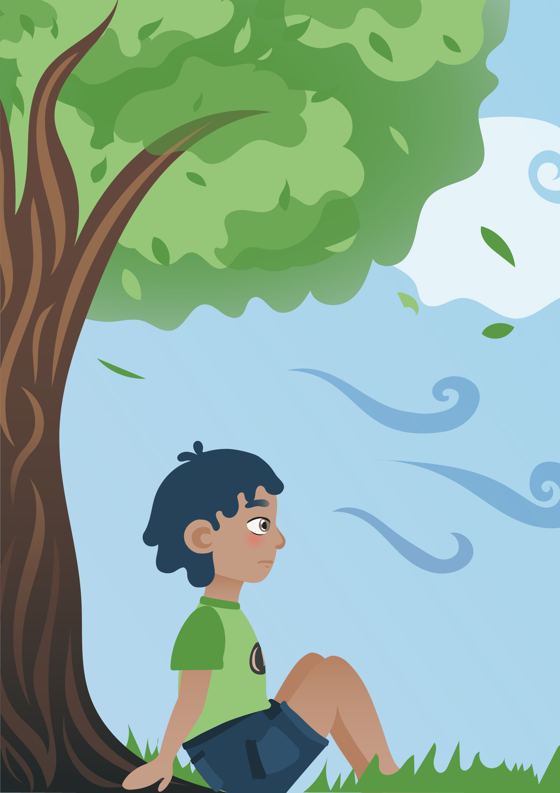

¿Quiénes somos?
Somos un grupo de soñadoras y creadoras que creemos en el poder de las historias para sanar. Desde el diseño y la ilustración, unimos nuestras voces y talentos para dar vida a El viaje para volver a mí, un proyecto que nace con la intención de acompañar a los niños en los momentos donde las palabras parecen quedarse cortas.
Nuestra misión
Guiar a los niños y sus familias en la comprensión de las emociones que surgen frente a la pérdida. A través de un cuento ilustrado y un espacio digital, buscamos ofrecer herramientas simbólicas y visuales que fortalezcan la inteligencia emocional, la empatía y la resiliencia.
Nuestra visión
Soñamos con un mundo donde el duelo en la infancia no se silencie, sino que se reconozca como parte de la vida. Un mundo donde los niños puedan nombrar lo que sienten, los adultos encuentren un puente para acompañarlos y juntos construyan caminos hacia la sanación emocional.

Nuestros valores
- Creatividad: transformar lo intangible en imágenes y relatos que hablen directo al corazón.
- Empatía: escuchar y acompañar sin juicios, validando cada emoción.
- Compromiso: crear un recurso confiable y sensible que sirva tanto en el hogar como en la escuela o en la consulta.
- Colaboración: unir el arte, la psicología y la educación para dar vida a un proyecto con propósito.

Nuestra historia
Este proyecto nació de una pregunta sencilla pero poderosa: ¿cómo explicar el duelo a un niño? En el intento de responderla, descubrimos que los cuentos, las metáforas y los personajes podían convertirse en guías. Así, Sky apareció en nuestras páginas: un niño que, con un bolso y mucha confusión, se enfrenta a la negación, la ira, la tristeza y, poco a poco, encuentra la aceptación.
El viaje para volver a mí no es solo un libro ni una página web; es un puente. Un abrazo convertido en ilustraciones, palabras y experiencias que invitan a reconocer que cada emoción, incluso la más dolorosa, guarda una llave para seguir adelante.